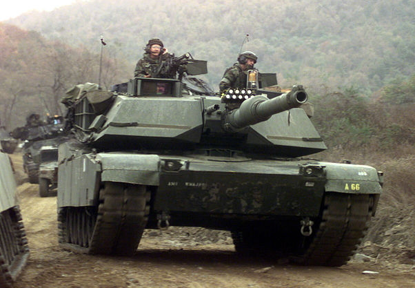

Beginning of the Modern Era
Around the late 1970s to early 1990s, tank development slowly started to reach its peak. By the mid-90's, most countries that developed tanks had created an MBT with an extremely powerful gun that fired APFSDS "dart" rounds, incredibly thick frontal armor, and strong engines to propel them at high speeds. Over the next 30 years up to today, these tanks have only had relatively minor improvements added to them, usually focusing on electronics upgrades and experimental/new technology like Active Protection Systems (APS). Of course, nations are still working on improving on the tanks we have today; for example, France and Germany are working together on a project called the Eurotank, which merges the two countries MBTs into one. Meanwhile, Russia has publically shown off its new T-14 Armata MBT. Although future warfare may not get as much use out of armored vehicles as war in the past has, tanks will always have a role in ground combat.
Leclerc
The French company GIAT Industries (now Nexter) began producing the Leclerc in 1990 as a replacement for the very aged AMX 30. The Leclerc performed very well in trials and tests, surpassing other countries more modern tanks in mobility, targeting, and shooting exercises despite the Leclerc's age.
- Armament: 120mm CN120-26/52 tank gun
- Armor: Roughly 580mm hull, 580-745mm vs APFSDS turret
- Mobility: 71 km/h on-road, 55 km/h off-road, 1,500 hp
- Features: Autoloader replaces one crew member for consistent loading
M1A1 Abrams

The M1 Abrams was initially introduced to service in 1980, and its variants continue to serve the United States military today. The M1A1 started production in 1985 and included a new, larger cannon, as well as redesigned blow-off panels and an improved storage area.
- Armament: 120mm L/44 M256A1 smoothbore gun
- Armor: Roughly 600mm hull, 1,200mm turret
- Mobility: 72 km/h on-road, 48 km/h off-road, 1500 hp
- Features: Blowout panels so if ammunition is hit, crew may be saved
T-80U
The T-80U is an upgrade done to the T-80 in 1985 which added a better turret, Kontakt-5 ERA (Explosive Reactive Armor), a new missile system, and a more powerful engine.
- Armament: 125mm 2A46M-1 smoothbore gun
- Armor: 780mm protection vs APFSDS, 1,320mm protection vs HEAT
- Mobility: 80 km/h on-road, 48 km/h off-road, 1,250 hp
- Features: Kontakt-5 ERA, can fire 9M119 Svir missiles